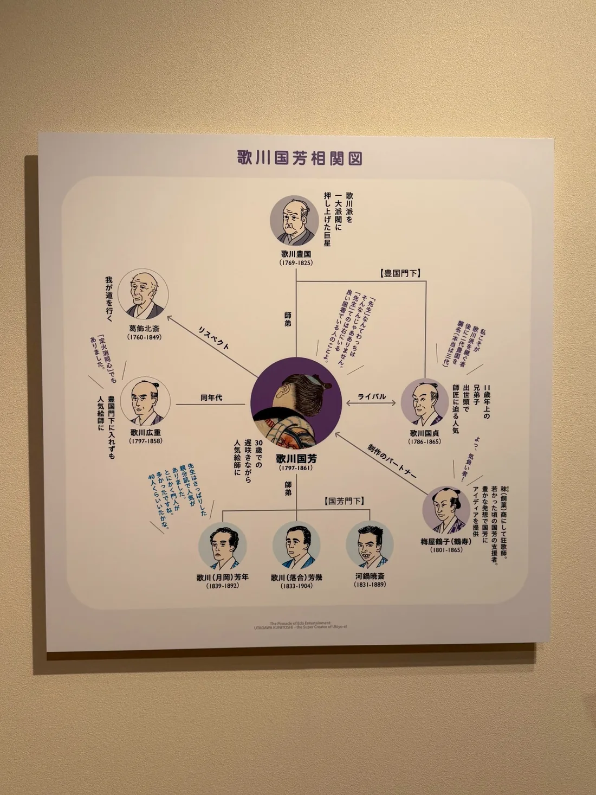

歌川国芳から東京駅へ、画風がそのまま受け継がれたわけではありません。でも「誰が誰から学んだか」をたどると、国芳→暁斎→コンドル→辰野金吾→東京駅とつながる。美術史を年代ではなく人で見ると、まったく別に見えていたものが急に一本の線になります。
昨日、歌川国芳の展覧会を見ました。一昨日は河鍋暁斎。どちらもおもしろかったけれど、自分の中ではまだ別々の展覧会でした。ところが国芳の相関図を見て、「あれ、暁斎って国芳に絵を習っていたんだ」とつながった。そこから少し調べたら、話は日本画の外へ出て、最後は東京駅まで行きました。

1. 昨日と一昨日が、突然つながった
展覧会を見ていると、その日は作品だけで頭がいっぱいになります。国芳なら水滸伝、武者絵、猫、風景。暁斎なら妖怪、動物、人物、猛烈な描写力。自分の中でも「国芳は国芳」「暁斎は暁斎」と別々の引き出しに入っていました。
でも、二日続けて見たからこそ「この人たち、つながっていたんだ」と気づいた。美術史の本で名前だけ読んでいたときより、前日に実物を見た人の名前が次の日に出てくる方がずっと強く残ります。
2. 国芳 → 暁斎｜最初の入口は浮世絵師・歌川国芳
河鍋暁斎は子どものころ、歌川国芳から約2年間、絵の手ほどきを受けています。その後は狩野派で本格的に修業したので、「暁斎＝国芳の画風をそのまま受け継いだ弟子」と考えるのは単純すぎます。それでも、暁斎の出発点のひとつに国芳がいたことは確かです。
国芳の作品を見ると、人物や動物がとにかく生き生き動く。大げさなポーズ、表情、ユーモア、画面から飛び出しそうな勢い。次に暁斎を見るときは「似ているところを当てる」のではなく、国芳のところで何を見て、その後の狩野派で何を足したんだろう、と考えてみたいです。
3. 暁斎 → コンドル｜日本に西洋建築を教えた人が、日本画を習っていた
次に出てくるのが、英国人建築家ジョサイア・コンドルです。日本の近代建築を語るときに登場する人物ですが、暁斎に入門し、日本画を学びました。暁斎から「暁英」という画号も与えられています。
ここがすごくおもしろい。コンドルは日本に西洋建築を教えるために来た人です。でも、日本では逆に暁斎から日本の絵を学んでいる。ある分野では先生で、別の分野では弟子。文化が「西洋から日本へ」一方向に入ってきたのではなく、同じ人の中で行ったり来たりしているのが見えてきます。
4. コンドル → 辰野金吾｜今度は建築が次の世代へ
コンドルは工部大学校で建築を教えました。その最初期の学生の一人が辰野金吾です。辰野は工部大学校造家学科の第1期生で、卒業後に英国留学を経て、やがてコンドルから日本の建築教育を引き継ぐ側になっていきます。
ここで線の種類が変わります。国芳から暁斎へは絵。暁斎からコンドルへも絵。でもコンドルから辰野へは建築です。だからこれは「同じ技法が四人を通って伝わった」という話ではありません。学んだ人が、別の場所でまた誰かを育てる。その連鎖として見ると面白い。
5. 辰野金吾 → 東京駅｜いつもの風景まで線が届いた
そして辰野金吾の代表作のひとつが、1914年に開業した東京駅丸の内駅舎です。
ここまで来て初めて、「国芳から東京駅まで」という線が完成します。
歌川国芳 → 河鍋暁斎 → ジョサイア・コンドル → 辰野金吾 → 東京駅丸の内駅舎
江戸の浮世絵と赤レンガの東京駅。最初と最後だけなら、同じ話の中に入れる発想すらありませんでした。でも数人の「学んだ／教えた」をたどるだけでつながってしまう。次に東京駅を通るとき、たぶん前より少しだけ建物を見上げると思います。
6. 国芳の絵が東京駅になった、という話ではない
ここは大事です。国芳の美意識がそのまま暁斎、コンドル、辰野へ伝わり、東京駅のデザインになった、という意味ではありません。暁斎は狩野派にも学び、コンドルが暁斎から学んだのは日本画、辰野がコンドルから学んだのは西洋建築です。
つまりこれは「作風の系譜」というより、人が人から学んだ系譜。
だからこそ面白いと思いました。文化は一本のきれいな線で受け継がれるのではなく、途中でジャンルも国も役割も変わる。先生だった人が弟子になり、弟子だった人が次の先生になる。その積み重ねの先に、今も残る作品や建物がある。
7. 次に実物で見るなら｜「誰から学んだ？」を一つ足す
次に国芳を見るときは、人物や動物の動きとユーモアを。暁斎を見るときは、その猛烈な描写の中に国芳で見たものと重なる部分があるかを。コンドルの建築を見る機会があれば、「この建築家は暁斎の弟子でもあった」と思い出す。
そして東京駅へ行ったら、丸の内駅舎を一度見上げてみる。
作品の見方が劇的に変わるわけではありません。でも、その人の後ろに誰がいたかを知ると、目の前のものに奥行きが一段増える感じがします。
国芳 → 暁斎 → コンドル → 辰野金吾 → 東京駅。
美術史は、人でつなぐとおもしろい。
参考：「ゴールドマン コレクション 河鍋暁斎の世界」公式サイト、東京大学総合研究博物館「日本近代建築教育の曙」、東京大学総合研究博物館「東京大学本郷キャンパスの歴史と建築」、JR東日本「東京駅及び周辺の整備計画について」